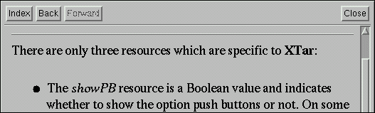

XTar - Hypertext Help
XTar includes an HTML viewer for displaying help information. It operates like a basic web browser.

Use buttons in the toolbar to navigate the document:
Index, returns you to the help index.
Back, displays the document previously visited.
Forward, allows you to navigate forward if you have selected the Back button.
Close, closes the help viewer.
To navigate to different sections within the document, click on the links which are highlighted in a different colour and raised from the page.
Go back to the index or on to the internal File Viewer menu.